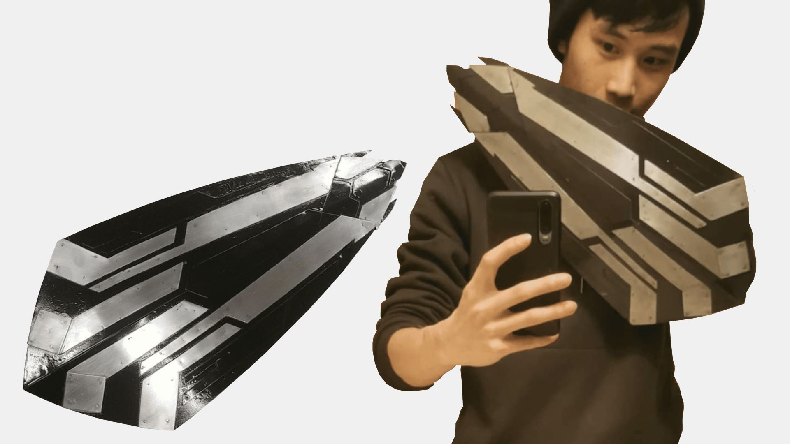
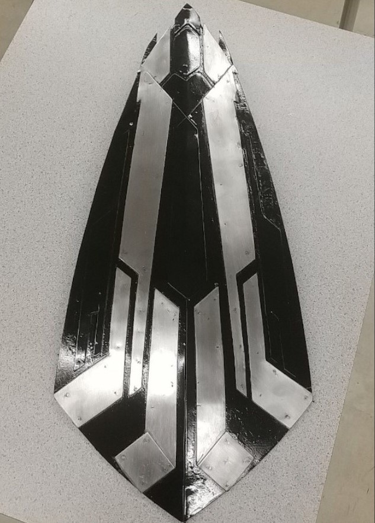
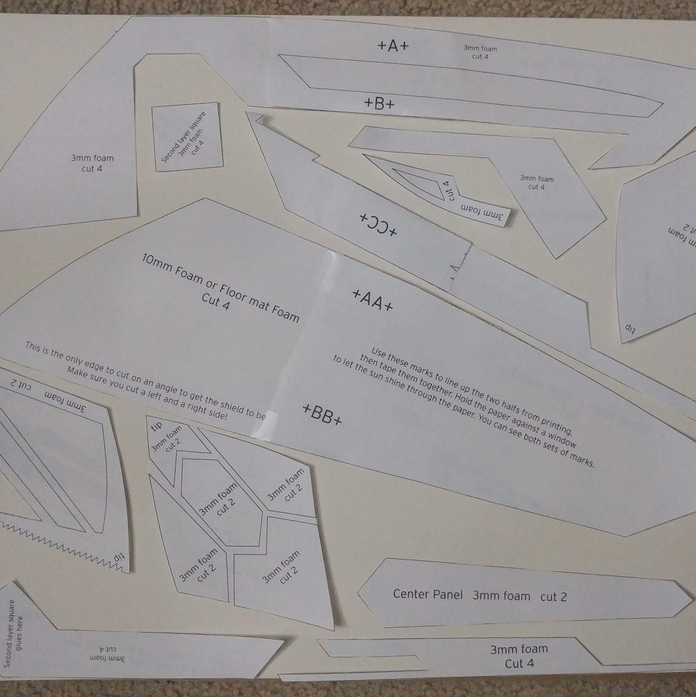
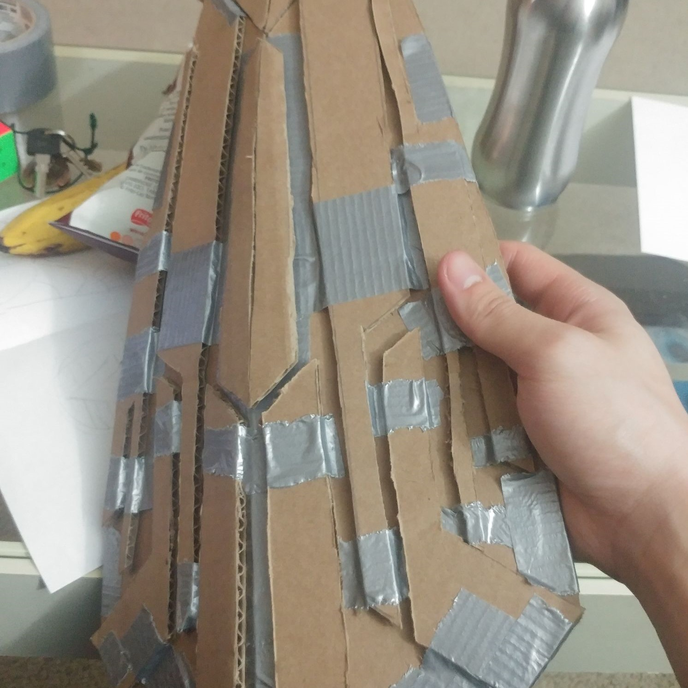
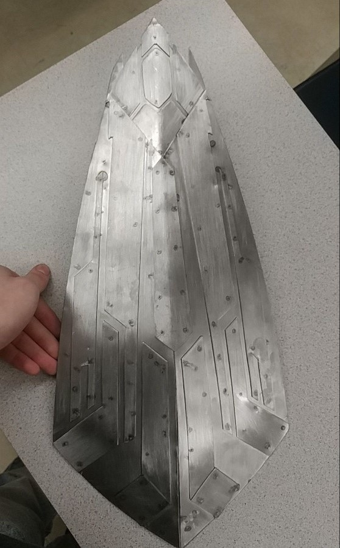
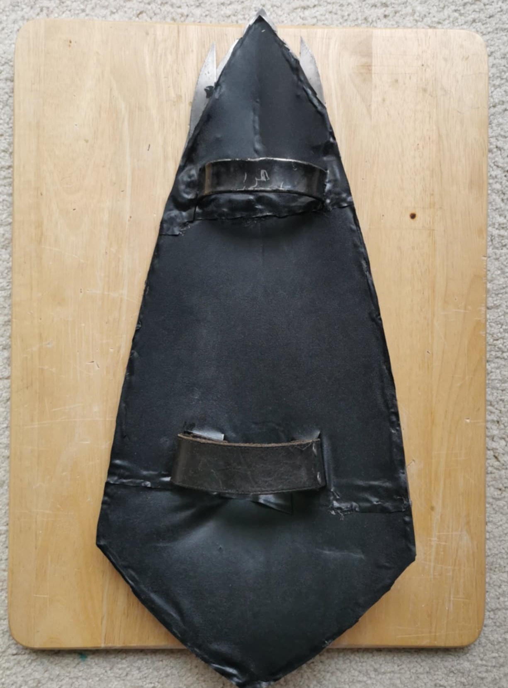
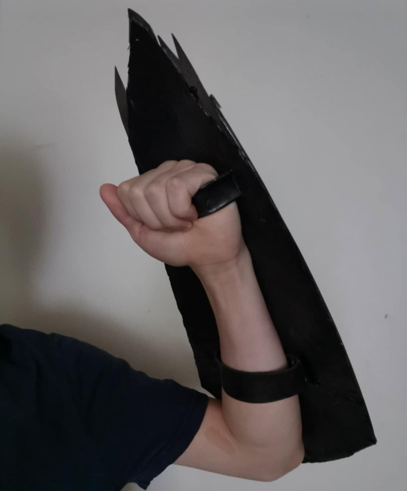

Metalwork has always been a huge passion of mine, and served as a medium to practice various shop tools, as well as experimenting with design methods and welding. This was a senior year project done in conjunction with a friend for our high-school automotive shop. We opted to create a wearable replica of the Wakandan Shield given to Captain America in Avengers: Infinity War.

Prototyping:
The first step in the process was determining the geometry for the individual plates. We found a template online for a cosplay shield intended to be used for cosplay props. We scaled the model down, printed the stencils first on paper, backed them with cardstock for additional stiffness, and transferred the outlines to cardboard.


Metalwork:
We used the cardboard prototype to gauge the curvature, as well as identify areas that would be difficult when transferred to metal, or areas to connect all the parts. With the templates transferred to 20-gauge sheet, the components were delicately cut with a combination of tin snips and a Beverly shear, before being post-processed with a file.
The completed parts were marked to ensure the order of assembly was feasible, then each layer was spot welded to start forming the shape. Tack welds were added for the delicate pieces, while the larger structure was carefully MIG welded along the seams.

Finishing Touches:
In order to actually be able to carry the shield, a handle was bent from additional sheet and MIG welded to the areas of the underside with greatest thickness. Two smaller plates were riveted with an old belt then welded in place to create a forearm strap.
The shield was masked based on the pattern seen in the movie, sprayed with black automotive paint then sprayed again with a clear coat to prevent corrosion. Finally an old leather seat cushion was salvaged for the inner lining, providing a comfortable fit.

My automotive and metalwork class was the kickstart of my exploration into manufacturing and fabrication. In the advent of additive manufacturing, I still deeply enjoy projects which incorporate sheet metalwork, which can create parts more feasible than CNC or powder metallurgy.
